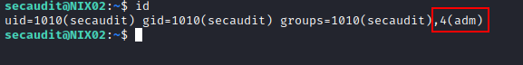
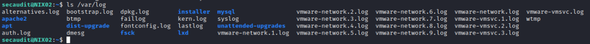

ADM group
Members of the adm group are able to read all logs stored in
/var/log.
This does not directly grant root access, but could be leveraged to gather sensitive data stored in log files or enumerate user actions and running cron jobs.
 search recursively for pattern inside /var/log
grep -r [pattern] /var/log/